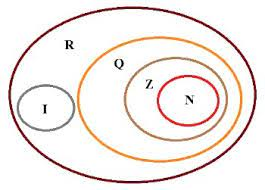
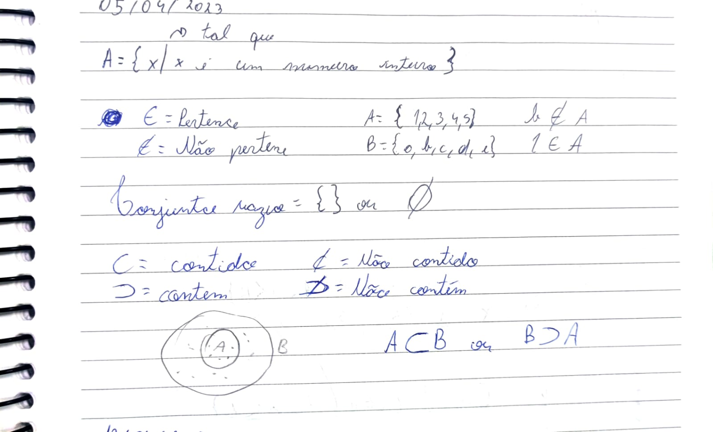
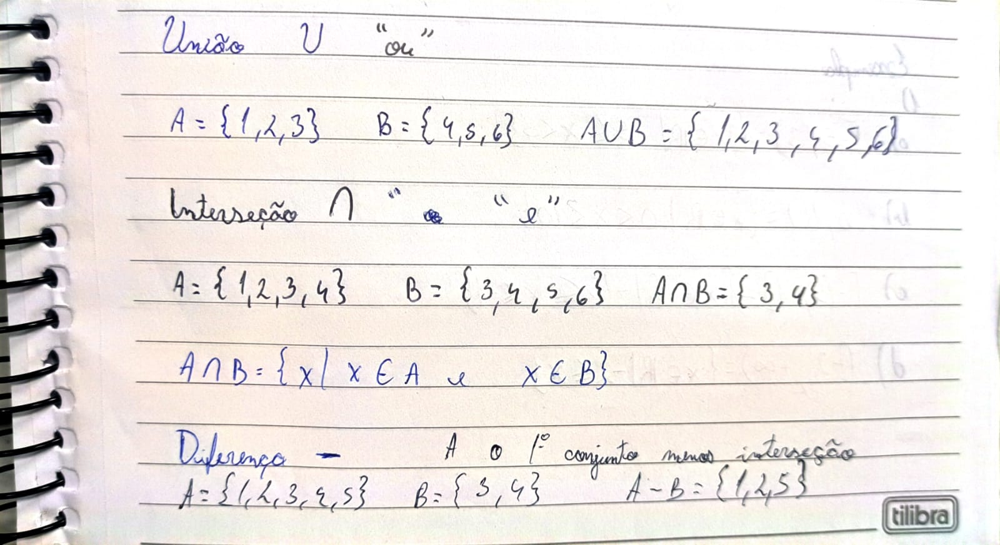
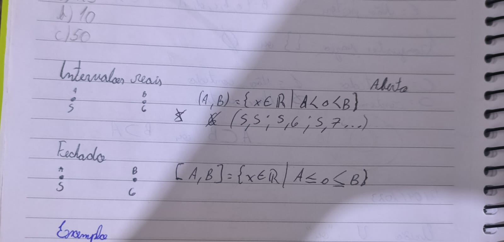
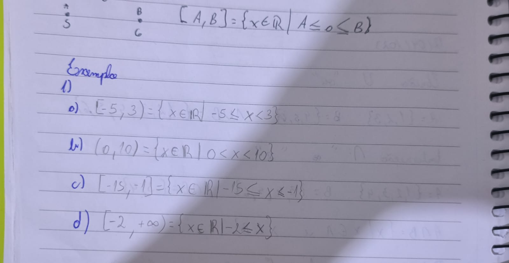

Conjuntos
Existem 4 principais:
- Naturais
- Inteiros
- Reais
- Irracionais

Simbolos
- pertence: ∈
- não pertence: ∉
- Conjunto vazio: {} ou Ø
- Contido: ⊂
- Não contido: ⊄
- Contém: ⊃
- Não contém: ⊅

Operações de Conjuntos
- União: U; junta dois Conjuntos
- Interseção: ∩; repete as informações iguais dos conjuntos
- Diferença: -; subtrai as informações e põe o restante do 1º conjunto

Intervalos reais
Pode ser escrito de diferentes formas como
- {x ∈ R/ A>a < B}
- [6,10)
- ○---------●
Sendo que cada simbolo tem seu significado
- Conjunto aberto: >; <; ); (; ○
- Conjunto fechado: ≥; ≤; [; ]; ●

Ex:

Voltar para o topo
Voltar para o inicio